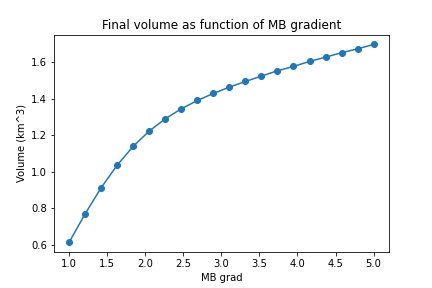

Assignments
Contents
Assignments¶
Week 04¶
“Due date”: 04.04.2022
Exercise 01: a short programming riddle¶
Let’s read some output of the OGGM model (download the data):
import xarray as xr
with xr.open_dataset('../data/oggm_fl_ela.nc') as ds:
ds = ds.load()
ds.thickness_m.sel(time=[2004, 2019]).plot(hue='time');
ds.area_m2.sum(dim='dis_along_flowline').plot();
ds.ela_m.plot();

These data represent a glacier simulation using the flowline representation. Each grid point on the flowline has a width, an area, and a thickness changing with time:
ds.bed_h.plot(color='k');
surface_h = ds.bed_h + ds.thickness_m
surface_h.sel(time=[2004, 2019]).plot(hue='time');
Your task is to compute the yearly “accumulation area ratio” (AAR), which is a number between 0 and 1 representing the fraction of the glacier area which is above the equilibrium line altitude (ELA). You have all the data you need above:
ds.ela_mrepresents the equilibrium line altitude (ELA) each year (unit: m)surface_hrepresents the surface elevation of the glacier grid points each year (unit: m). With this you can check which grid points are located above the ELA.ds.area_m2represents the area of each grid point each year (same dimensions assurface_h, unit: m2). With this you can compute the total area of the glacier each year (plotted above) and together with the ELA andsurface_hyou can compute the AAR.
The “difficulty” of this programming exercise is that all variables change each year. An intuitive way to solve the problem would be to use a for loop and you may want to start with this if you want to.
In fact, one can do it without for loop in 4 lines of code in xarray or numpy (the code in xarray is simpler than in pure numpy). If the task with xarray was too easy for you, you can try to code the same without xarray.
Exercise 02: code profiling¶
Pydemic is an agent-based model of a pandemic used to teach OOP to master students.
The code is very slow, because it does not use vectors to represent data. Each agent in the model has a location and state stored in scalar variables. This is OK given the purpose of the tool (teaching OOP), but we can still do better.
Run the pydemic.py module (no installation needed, a python pydemic.py should suffice to create a plot) and spend some time studying its code (it should be relatively straightforward). The code is quite slow though (a single simulation takes about 23s on my laptop).
Your task is to profile pydemic and find at least one bottleneck in the code. For the profiling, use py-spy to run the module (remove the plot function from __main__ first!!!). Once you have found the bottleneck, implement or design a strategy to address it.
Week 05: Numerical modelling¶
“Due date”: 25.04.2022
The glacier_model.py script (shift + right click to download) contains numerical code to realize glacier flowline experiments. The code is similar to what OGGM is doing, but with some simplifications:
the glacier has a rectangular bed shape and is of constant width
the mass balance is a simple linear function of elevation
The model solves the continuity equation as a numerical diffusion problem (see the seminal paper by Oerlemans 1997 if you are interested about the origins of such models: our code is the same but without the trapezoid shape and without basal sliding). There are a few things to say about the time stepping scheme (which is fixed to a constant value which is a bad idea), but numerics are not what we are trying to improve here.
Let’s consider the following:
from glacier_model import glacier_evolution
import matplotlib.pyplot as plt
import numpy as np
xc, bed_h, surface_h, years, volume, length = glacier_evolution()
plt.plot(years, volume*1e-9); plt.title('Volume evolution'); plt.ylabel('km$^{3}$');
plt.plot(xc, bed_h, color='k'); plt.plot(xc, surface_h);
plt.title('Glacier geometry at the end of the simulation'); plt.ylabel('Elevation');
%timeit glacier_evolution()
3.65 s ± 73.4 ms per loop (mean ± std. dev. of 7 runs, 1 loop each)
Let’s make this code faster in two steps (which is also what you should do in real life)
“Micro-“optimizations¶
Your task: profile the code and evaluate the bottlenecks, and optimize what can be optimized.
With a few very simple changes in the code (all related to the examples discussed in the lecture notes), I was able to make the code faster by a factor of two:
from glacier_model_optim import glacier_evolution_optim
%timeit glacier_evolution_optim()
2.08 s ± 102 ms per loop (mean ± std. dev. of 7 runs, 1 loop each)
And then in class I also showed you numba:
from glacier_model_optim_numb import glacier_evolution_optim_numba
%timeit glacier_evolution_optim_numba()
---------------------------------------------------------------------------
ImportError Traceback (most recent call last)
/tmp/ipykernel_9420/1162403739.py in <cell line: 1>()
----> 1 from glacier_model_optim_numb import glacier_evolution_optim_numba
2 get_ipython().run_line_magic('timeit', 'glacier_evolution_optim_numba()')
~/disk/Dropbox/HomeDocs/git/advanced_programming/book/02_performance/glacier_model_optim_numb.py in <module>
1 import numpy as np
2 import matplotlib.pyplot as plt
----> 3 from numba import jit
4
5 sec_in_day = 24 * 60 * 60
~/.pyenv/versions/3.8.5/envs/py3/lib/python3.8/site-packages/numba/__init__.py in <module>
198
199 _ensure_llvm()
--> 200 _ensure_critical_deps()
201
202 # we know llvmlite is working as the above tests passed, import it now as SVML
~/.pyenv/versions/3.8.5/envs/py3/lib/python3.8/site-packages/numba/__init__.py in _ensure_critical_deps()
138 raise ImportError("Numba needs NumPy 1.18 or greater")
139 elif numpy_version > (1, 21):
--> 140 raise ImportError("Numba needs NumPy 1.21 or less")
141
142 try:
ImportError: Numba needs NumPy 1.21 or less
Multiprocessing¶
Let’s consider the following sensitivity experiments (taking way too long):
volumes = []
grads = np.linspace(1, 5, 3)
for grad in grads:
xc, bed_h, surface_h, years, volume, length = glacier_evolution_optim(mb_grad=grad)
volumes.append(volume)
volumes = np.array(volumes)
plt.plot(grads, volumes[:, -1] * 1e-9, 'o-');
plt.plot(years, volumes.T * 1e-9);
What if we want to make 100 experiments instead of 3?
The problem is what we call embarrassingly parallel: each task is fully independent of the others.
Use python’s multiprocessing Pool.map() method to realize the same experiments on the MB gradient but with input np.linspace(1, 5, 20) instead.
The output plot should look more something like:

Repeat with another sensitivity experiment of your choice!